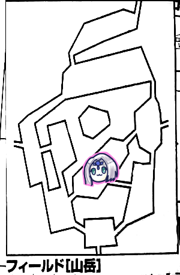

GM「はい！今回もお集まりいただきありがとうございます！前回の生還お疲れ様でした！」
タッシュ「あれ、結局生き残ったんだ」
「把握してないのかｗ」
タッシュ「前回オンセで完全に出番ないから途中でトイレ行ってそのまま戻らなかった」
GM「結局蘇生するってことでおk？」
タッシュ＆ピーター「おk」
GM「はい、蘇生費用は村長が払ってくれました。君たちには2万ガメルの借金があります。これから君たちが受ける報酬は全て半額になり、その分借金が返済されていくことになります。リーダー、ここに蘇生費用借金って書いて」
ブルーローズ「そせいってどう書くの？」
タッシュ「草冠に、魚に、積立の左」
ナナシ「俺が書くわ」
GM「蘇生ですが、ファンタジー蘇生問題というのがあります。生き返る方法があるならみんなほいほい生き返るよね、そしたら世界が大変なことになるよね、という問題です。それにひとつの決着をつけているのがSW2.0です。この世界の人は死んで生き返ると穢れというものが溜まります。なので一般人はほぼ蘇生しません。穢れは忌むべきものとされているので統治者なんかもまず蘇生は望みません。蘇生するのは大体冒険者です。そしてこれが蘇生を繰り返す度に溜まっていき、穢れが5になるとアンデッド化します。あと死ぬ直前の1時間前の記憶が吹っ飛びます」
タッシュ＆ピーター「え、何があったの？」
「彼らはあの戦闘を覚えていなかったのだ…」
GM「というわけで、タッシュとピーターは穢れが溜まりました。ここで穢れ度表を振ってもらいます。移動含めて死後2日経っているので、経過した日数-1で-1の穢れ度表になります。2d6をどうぞ」
ピーター「せーの、8！」
GM「ツノが生えました」
タッシュ「こっちも同じ」
「ツノの生えたうさぎと石…」
GM「とは言ってもまだ穢れ+1なのでツノと言うよりはコブです。穢れが進行するごとに変化していくシステムです。あとツノが生えるのは頭です。ルルブには書いてありませんが前に頭以外の場所でもいいのか聞かれたことがあるので、これは明確にしておきます」
「肩にツノとか生えたらファンキーじゃない」
「世紀末かな？」
さて、前回はルキスラに辿り着いたところで終わっています。
誰かと知り合いだったり、名誉点201点以上貯めることで新しいクエストが発生するらしいです。
みぞれ「名誉点ってどうやって稼ぐんだったっけ」
「剣のかけらを納品すれば得られるよ」
「セズウィック村にはまだ守りの剣がないからなあ」
ピーター「山岳の赤い花を鑑定できますか」
GM「はい、鑑定は指定レベルのセージに頼む方式になります。鑑定料はセージレベルの2乗×100ガメル。失敗した場合は半額が返ってきます」
「つまりレベル4に頼むなら1600ガメル」
「高っ」
ピーター「わたしそのお仕事して暮らしたい」
「そういや回復どうしますか」
「適当に回復してMP消費して泊まったことにしよう」
ナナシ「GM、名誉点で得られる追加装備効果アイテム使ってブレードスカートって4つ装備できますか」
「なにその松ぼっくりみたいなの」
GM「うーん…どこにも書いてないね、ううーん…バランスを大きく崩すのでなしとします。装備自体はできるけど、複数つけても効果は1個分の効果しか適用できないこととします。但しこれはブレードスカートの場合で、他のアイテムについては応相談とします」
みぞれ「えっなにその4つ付けられるのってどうやるの」
タッシュ「ルルブIIに載ってる名誉点で買えるアイテムでそういうのがある」
みぞれ「ほへー」
ブルーローズ「GM、確か必筋+10で武器習熟持ってなくてもペナなく装備できるとかいうのありましたよね？あれできます？武器習熟1は持ってるので、Sランク武器を使いたいんです」
GM「ふむふむ…あ、できるね」
ブルーローズ「やった！というわけで皆様、この財政難の中申し訳ないですが融資をお願いしていいですか！」
ピーター「パーティー財布から出しましょう」
ブルーローズ「残りは…あ、魔晶石買わなかったことにして、自分で出します！トンファーゲット！」

GM「ではブルーローズ、主の移動をお願いします」
ブルーローズ「ころころ…3です！皆さん逃げる準備はよろしいですか？」
GM「えーと…3？本当に3？間違いなく3？」
「え、なになになにー？」
GM「神引き。このエリアにいます」
「うわ」
タッシュ「とりあえず魔物知識判定しようか？」
GM「あれ？判定できてなかったっけ？」
「モンスターリストってフリクション事件で消えてるんじゃ」
ナナシ「いや、俺書き直したよ、」
タッシュ「コカトリス10レベルモンスター…これ回避特化のナナシが回避で負けてる、逃げようｗ」
ピーター「これ逃亡先は街になるんですか？」
GM「これはルルブのバグですね、これは逃亡成功したら脅威は去ったものとして同エリアに留まるものとします」
「冒険者どうしよう」
GM「冒険者は個人で判定します。商人はかばってください」
ピーター＆みぞれ「いちたりない」
GM「9点ダメージです。軽減なしです。冒険者の逃亡判定してください」
ブルーローズ「私がやります。7！回避！」
「商人は失敗しました」
「あれ？一般人ってHP10なんだっけ？ならそのまま受けてもらおう」
「ゲスい」
ピーター「ウィスパーヒールしまーす、はい成功」
ブルーローズ「ビビッド歌いまーす、皆さんMP1点回復で！」

GM「オアシスです。各自フリーアクションをどうぞ」
みぞれ「あれ？イベント振らなくていいの？」
GM「ある時とない時があるんです(にっこり)」
「今、主はどこにいることになってるの？」
GM「さっきの場所にいます。移動する時はまたブルーローズに判定してもらいます」
ブルーローズ「なんで私！？」
GM「いち、近くに配置してくれる。に、いる場所を当ててくれる。さん、どんぴしゃの位置に配置してくれる」
ブルーローズ「ふえええ」

ピーター「イベント振りまーす、5」
GM「3回目の盗賊イベントですね、ここを通りたくば通行料を寄越すがいい」
ブルーローズ「ここをシマにしていた盗賊グループが2つ消えたのをご存知ですか？」
盗賊「…なんだと？」
ナナシ「君たち、遺跡ビジネスに興味はないかな？」
GM「6ゾロでしか見つからないんだぞ、そうホイホイ見つかってたまるかよ！」
ナナシ「真実は…貴方の目で確かめてみてください」
ブルーローズ「まだ誰も足を踏み入れていない雪原のような遺跡が貴方を待っています」
タッシュ「資材のご購入はセズウィック村で」
GM「盗賊たちは心を動かされたようです」
みぞれ「で、どっちを教えるの？いやどっちって選択が出てくるあたりだいぶなんかおかしいけど」
ピーター「この場所のこと噂になってそう。『ここに来れば遺跡を紹介してもらえるらしい』」
ついてきてる冒険者「あの…教えるより自分で攻略した方が実入りがよいのでは？」
ブルーローズ「実はもう一つあるんですよ」
冒険者「ええ…！？」
「これもう本当に遺跡ビジネスできるのでは」
GM「迷宮屋って職業があってですね」
「多分もう呼ばれてるんじゃない？あいつら迷宮屋だって」
みぞれ「イベント1です」
GM「3出してくれればみぞれの好きな雪崩なのに」
みぞれ「好きじゃないです！！！」
ナナシ「探索します。遺跡見つけた」
ブルーローズ「冒険者、ちょっとそこ掘ってみ」
冒険者「こ、これは…！」
ナナシ「我々の言ったことが分かったかな？」
タッシュ「遺跡ってのは普通、文献とかで調べてから場所をあたるものだけどなあｗ」
セズウィック村に到着。
冒険者から謝礼400ガメル、商人から謝礼300ガメルをもらいました。
これらも借金として半分引かれます。
商人をつれてきたので村の商業値が4に、冒険者をつれてきたので防衛ポイントが7に、遺跡を売ったので名声値が22になりました。
「名声値だけ値おかしくないか」
また、ミッションの報酬として一人当たり2500ガメルが支払われます。これも半額になります。
「返済額6250ガメル…と。これ意外と借金返済すぐじゃない？」
「2人しか死んでないからね」
そして建設ポイントが3上がりました。
「これで交易宿を建てよう！」
GM「さて、どのミッションを受けますか？」
「新米騎士かミラベルかなー」
「新米騎士に遺跡の探し方を叩き込もうぜ」
「騎士を遺跡ハンターにしてどうする」
「ミラベルの依頼はどんなのだっけ？」
GM「プリズムフィッシュという特殊な騎獣の餌を取ってくる依頼です。要は釣りですね。森林か渓谷か湖畔で釣れます。10匹必要です」
「湖畔ってまだ出てないよね」
「森もないな」
「あれ？森あったはずだけど」
「フリクションで消えてるやつやん」
「新米騎士は？」
GM「山岳か森林か渓谷か台地のランダムのフィールドで戦闘訓練を3回させます。彼らは護衛対象ではありません。ちゃんと戦闘に参加させないといけません」
「それじゃ、この依頼を受けて、渓谷に当たったらハロルドさんをこないだの幽霊のところに連れていけばいいんじゃないかな」
「OK、じゃそれ受けます」
GM「はい、では場所を決めてください。リーダー」
ブルーローズ「はーい、ころころ」
GM「場所は山岳です。『今回鍛え上げてほしい新米騎士はこの3人だ。後ろに下げるなどの戦闘訓練にならない行為はやめてくれ』」
ブルーローズ「これはオースが使えるのでは！？」
「で、こいつらの性能は？」
GM「ルルブ1に載ってるテンプレ人間ファイターです」
ナナシ「ゴミじゃん」
GM「ゴミとか言わない」
ブルーローズ「は！人間ってことは運命変転使えるじゃん！」
ピーター「パーティーレベル下がりますか？」
GM「彼らは換算しません」
「やべぇ、高レベルモンスターがレベル1に襲いかかる」
GM「これケイトルートだと商業値の方が伸びやすくて更に厳しいんだよね。ケイトルート行ったパーティー、こいつらワンパンだったらしい」
「でしょうよ」
GM「クリア条件は別々の3エリアで戦闘すること。但し、山岳以外では後ろに下げていても構いません」
みぞれ「まあ、山岳は隣のフィールドだから関係ないな」
そう言えば前回騎士団が来た時に団長の名前を聞いたことを書くの忘れてましたね。
ゼノヴィア・フランルージュ。人間、女、19歳です。若い。やばい。若い。10代女で団長とか有能の匂いしかしない。
ゼノヴィア「最近蛮族が侵攻してきているという噂があってな」
ピーター「それ、レベル10パーティー3つじゃ足りませんか？」
「盗賊の連中かｗ」
「同行する騎士の名前は？」
GM「んー、エコー、ベータ、チャーリーで」
みぞれ「アルファじゃなくて？」
GM「アルファだった」
「赤、青、黄のコマを使うからレッド、ブルー、イエローでいいんじゃない？」
みぞれ「貴方たち…生き残ってください、いいですか、生き残ってください」
新米騎士「えー、所詮訓練でしょー？」
ナナシ「貴様らなめとんのかー！」
成長処理をして、山岳へ向かいます。
ここで全員がレベル5に、ナナシがレベル6になりました。
逃亡判定の時など、平均レベルの切り上げが発生する場面はありますが、それを上回るメリットがあるとの判断。
みぞれ「あ、私、騎獣の練習したいです！とりあえずミニバイクで…これどうすればいいんだ」
GM「騎獣証ってのを100ガメルで購入して、ライダーギルドでお金払ってレンタルできる」
みぞれ「んん…？なんかルール変わったって書いてある。借りる対象の騎獣契約スフィアを購入すれば毎回レンタルできるって書いてある」
GM「まじか、今そんなルールになってるのか」
みぞれ「もう普通のバイク借りちゃおう。私、今回2部位ですよろしくー。あと開幕グレネード射程10m撃ちたいので初期配置前衛でお願いします！先制取ってくださいね…？」

ブルーローズ「貴方たち見てなさい、これが戦闘というものです！…6！」
「本当に出しよった」
GM「魔物との遭遇です。身長2mで全身に羽毛の生えた、腕に翼の生えたワシのような頭の二足歩行の人型です。槍を持ってます」
「腕に翼？ガッチャマンみたいな？」
GM「かな？それが2体と、身長2mの筋骨隆々の人間が1体」
ブルーローズ「よう腕自慢」
ピーター「セージ判定しまーす」
GM「はい、鳥はアードラー、腕自慢はレッサーオーガです。どっちも弱点抜きました」
ナナシ「先制成功しました」
みぞれ「マギテックレベル5！この時を待っていた！くらえグレネード！」
GM「レッサーオーガのみ抵抗失敗しました」
みぞれ「開幕クリティカル！えー、レッサーオーガは26点、残りは18点の半額くらいやがってください」
GM「うわ、ごそっと削れた」
みぞれ「そしてバイクを反転させて制限移動で3m後ろへ！ぶろろん！これバイクなのに3mしか移動できないのおかしくないすかｗ」
「これ新米騎士誰が動かす？」
ナナシ「俺イエローを動かすわ、ブルーローズはレッドで」
ブルーローズ「え？ブルーがいい」
みぞれ「私は面倒見てあげたいのはやまやまですが記録があるので他の人にお願いしたい(メタ)」
タッシュ「じゃレッドの面倒を見てあげよう」
イエロー「全力攻撃をレッサーに！先輩の出番なんてないっすよー！」
GM「回避」
ブルー「我が青き剣の錆となれ！全力攻撃！」
GM「クリティカル回避」
レッド「お前ら調子に乗りすぎだー全力攻撃！」
GM「命中しました」
レッド「ダメージ出します。よし撃破！」
沸き起こる拍手。
「さすが戦士、低レベルでもいい火力だ」
なんか各騎士すごい特色が出てるｗ
ブルーローズ「負けてはいられませんわ！アードラーにキャッツアイ魔力撃でトンファーで攻撃！」
GM「命中しました」
ブルーローズ「19点！撃破！」
ナナシ「挑発して俺のスカートの餌食よー(にやり)」
GM「命中しました」
ナナシ「あっやばいとどめ刺しちゃうかも…8点」
残り10点！
タッシュ「ブラントウェポンを…いや、挑発は当たってるからいいのか。(新人に)みんなー、あいつの回避を見ておくんだー」
ピーター「チアで」
GM「ではこちらのターン！挑発受けたアードラーがナナシに攻撃！」
ナナシ「ころころ…はっ！？回避いちたりない」
ブルーローズ「新人があっ、って目で見てるよ、あんたいつもそんなことしないじゃない！ｗ」
2ラウンド目！
ナナシ「もう一度私にチャンスを！」
タッシュ「ナナシかっこわるい」
みぞれ「まあまあ、まだあと2回戦闘あるから」
赤、青、黄、全員斬りかかって回避されました。
ブルーローズ「貴方たちみんな筋がいいわ！」
新人「ありがとうございます！」
褒めて伸ばす。
ナナシ「ケンタウロスレッグ入れて挑発攻撃！」
GM「クリティカル回避」
ブルーローズ「あなたちょっと人目を気にしすぎじゃないの？ウィンクとかしなくていいから！」
ブルーローズ「魔力撃をアードラーに。あっクリティカルしました」
GM「沈みました」
ブルーローズ「これ今倒さないとダメだという使命感が」
タッシュ「さすが先生」
ナナシ「ぶー」
ピーター「ナナシをぽんぽんってします。一緒にトランプする？」
「これ新人は剥ぎ取りできますか？」
GM「できません。彼らはフリーアクションのカウントには入りません」
「じゃ手本を見せよう」
レッド「私は騎士団です、剥ぎ取りの必要を感じないのですが」
タッシュ「君はそれで一人で行動することになった時にどうするんだね？」
レッド「はっ…生存戦略ですね！」
ブルーローズ「ビビッド歌います、これが遺跡の探し方だ！」
「なんか違う」

ピーター「イベント5です」
GM「魔物ですね、四つ足の牛が1匹、体長1mほどの背中に翼の生えた犬が1匹」
ピーター「レッドブルを飲んだ犬」
ブルーローズ「レッドブルとレッドブルを飲んだ犬」
GM「あと雷をまとったワシ。牛ぐらいなら掴んで飛べそうです。こいつは部位持ちです。こいつが前衛、あとは後衛」
ピーター「魔物知識判定します」
GM「ワシはサンダーバード、3部位です。牛はナンディン。犬はケルブです」
「ナンディンが真語魔法レベル4、ケルブが神聖魔法レベル5使う、やばい」
ナナシ「先制振りまーす。クリティカル！」
みぞれ「じゃさっきのやりまーす！どうしよう、サンダーバードでいいかな？」
「後ろが怖いから後ろ処理したい」
みぞれ「んんー、でもサンダーバード3部位なんだよね、ていうかよく考えたら後ろは届かなかったわ。サンダーバードにグレネードぼーん」
GM「全部位抵抗しました」
タッシュ「じゃサンダーバードはよ潰そう。リープスラッシュ3倍がけで」
ナナシ「(新人に)あれがウィザードってもんやーよく見とけやー」
GM「全部位抵抗しました」
ピーター「ファイアブラストをサンダーバードに」
GM「くちばしだけ抵抗しました」
ピーター「翼2枚撃破！」
「よっしゃ、今だ、行け訓練生！」
3人ともサンダーバードに突っ込んで回避されました。
ブルーローズ「仕方ないわね、キャッツアイ魔力撃でサンダーバードを攻撃」
GM「はい命中」
ブルーローズ「ふふ、大切なお客様に怪我をさせるわけにはいかないですからね！」
みぞれ「客じゃないです、あと残りHP1です」
ブルーローズ「あら、じゃ2撃目」
GM「命中です」
ブルーローズ「あっクリティカル」
みぞれ「オーバーキル」
ブルーローズ「くちばしをこう持ってバキッ！！！」
みぞれ「訓練生が引いてます」
ナナシ「これ挑発したら魔法系封じられるんだっけ？」
GM「普通に考えて、そいつに対してこのヤローってなるんで回復やエンチャントはしませんね。なのでその辺の補助行動は封じられることにしましょう」
ナナシ「よし、ライトメイスでケルブに挑発攻撃！クリティカル！」
GM「ではこちらのターン！ケルブは挑発受けてるのでナナシを攻撃します。ナナシとブルーローズと訓練生に対してフォースを5倍がけ！」
ナナシ「抵抗！」
他「失敗しました」
GM「クリティカルしました、14点どうぞ」
「ああっ訓練生が！？」
GM「ナンディンがブルーローズを起点にライトニングを撃ちます。この場合ブルーローズは確定で受けて、他の直線上にいる人は1～3で受けてください」
ナナシ、ブルー、タッシュ「避けた」
ブルーローズ、ピーター、みぞれ「当たった…」
みぞれ「これはバイクの分も振るやつですか？」
GM「部位扱いなので振ります」
みぞれ「う、失敗」
レッドとイエローも失敗、そしてこいつらは倒れました。死亡は回避。
「これも経験です」
ブルー「ぶるぶる」
ブルー「2ラウンド目！全力攻撃でナンディンに攻撃します！」
GM「同値で回避」
「惜しい！」
ブルーローズ「ナンディンに攻撃！魔力撃トンファーで！」
GM「当たりました」
ブルーローズ「クリティカル！2撃目いきまーす」
GM「回避ファンブルしました…」
ブルーローズ「よーし、じゃあ私も頑張ってファンブル出すようにしますね！えーいころころ！あっ…ファンブル…」
模範的なフラグ構築でした。
ピーター「ナンディンにファイアボルトかけます」
GM「抵抗失敗しました」
ピーター「あ、クリティカル」
GM「はい死んだ」
ナナシ「ケルブに挑発攻撃します」
GM「当たりました」
ナナシ「威力ファンブル…」
みぞれ「これ挑発は入るの？」
GM「当たりはしたから挑発は入りますよ」
タッシュ「ここはカンタマ撃っとくかー」
ブルーローズ「かんたまって何」
「カウンターマジック」
タッシュ「訓練生とナナシとブルーローズにかけます。精神抵抗+2されました」
GM「残ったケルブはフォース3倍がけで訓練生とナナシとブルーローズに」
ナナシ、ブルーローズ「抵抗成功！」
ブルー「抵抗失敗」
「訓練生死んだ？」
「ギリ生きてる」
そしてブルーローズがケルブにワンツーフィニッシュを決めました。
戦闘終了！
ブルーローズ「レッドとイエローにアウェイクンかけます。パーティーにプリーストが必要な理由がわかりましたか？」
ピーター「ウィスパーヒール撃ちます。えーと、これ人数オーバーしますね…」
タッシュ「じゃアースヒールします。みぞれのバイクはウィスパーヒールじゃ回復できないし」
みぞれ「ありがたい。それじゃ私はどうしよう、MP回復してほしい人いる？」
ナナシ「回復してほしい」
みぞれ「じゃ魔香草炊こう」
GM「魔香草って煎じたり炊いたり色々な表現されるよね」
みぞれ「香草って言うぐらいだから香りで回復するんだと思ってた」

みぞれ「イベント5です。うわぁまたこういう目を出す…」←前回のトラウマ
タッシュ「でもこれで訓練は終了だよ」
ブルーローズ「さっき戦ったやつかな？」
GM「さっきとは違うやつだね。ローブを着た魔法使い、顔に傷のある斧持ちが2人、油断ならない目をした人間が1人です」
「え、人間？」
「やばい運命変転使えるやつだ」
「言葉は通じますか？」
GM「はい。『どうだ、取引をしないか。ここでその訓練生を差し出して騎士団に失敗を報告すれば報酬を出そう』」
「え、なに言ってんのこいつ」
「目的は何だ！」
相手「セズウィックの騎士団のゼノヴィアが力をつけるとクライアントが困るんだよ。報酬は2倍出す、どうだ？」
ブルーローズ「はっ…欲しいー」
「おいリーダー」
「セズウィック村の害になるなら従えません」
相手「それは心配ない。こちらは彼女が失脚するのが望み。あの村自体に恨みはない」
訓練生「団長に恨みを持つ人物…心当たりありますね」
ナナシ「10万ガメルならどうだ？全員でじゃない、ひとりだ！」
相手「にいちゃん、世の中には相場というものがあってな」
ナナシ「話の分からんやつだなあ！」
「お前がだろｗ」
相手「交渉は決裂だな」
というわけで改めて戦闘です！
訓練生「前に行かせてください！(怒り心頭)」
ブルーローズ「ふ…止めても行くのでしょう？(にやり)」
みぞれ「これ訓練生のステータス上がったりしません？」
GM「これジャンプじゃないんで」
ピーター「はいはーい魔物知識判定しますよ！」
GM「魔道に魅入られた魔法使い、山賊の首領×2」
「首領が2人とかおかしくない」
GM「あとは腕利きの傭兵ですね。なお全員人間なので弱点はありません」
ナナシ「よーし先制とったー」
みぞれ「グレネード投げまーす。魔法使いだけ後ろにいるんだよね？じゃ首領と傭兵の3人がターゲット」
GM「首領の片方だけ失敗しました」
みぞれ「じゃそいつは15点、他は半額受けてください。追撃でバイクからグレラン発射」
GM「全員抵抗失敗しました」
みぞれ「あ、グレランて威力20なのかー、えーと各自12点、首領1人死にそうですねひゃっほう」
「みぞれがトリガーハッピーだ」
ピーター「じゃファイアブラストを前後に撃ち込みますか！」
ナナシ「行け、レジェンドファンブラー！」
みぞれ「フラグ立てんなｗ」
ピーター「クリティカルしました！」
ブルーローズ「フラグ破壊した、レジェンドファンブラーなんて言わせない！」
GM「もちろん全員抵抗失敗です」
ピーター「ダメージ出しまーすころころ」
ブルーローズ「ダメージ出た！」
GM「！？」
ピーター「出目8なので13点でーす」
GM「びっくりした、どんだけ回したのかと思った。首領2人とも倒れました」
タッシュ「では訓練生にレクチャーしよう、敵に魔法使いがいた時の戦法を…ファナティをブルーローズと訓練生に4倍がけで！」
イエロー「全力攻撃両手利きで腕利きの傭兵を攻撃！クリティカル！」
GM「うーん、さっきから運命変転するチャンスが来ないんだよねー」
タッシュ「ファンブルすればいいんだよ」
GM「ころころ…1と3」
タッシュ「それはクリティカルに対しては使えないね…」
腕利きの傭兵に10点、防護差し引いて5点のダメージ！残り15点！
ブルーも傭兵に攻撃。回避されました。
レッド「全力攻撃ツーハンド。ダイス6…ここは反転しておこうか！」
GM「当たった」
タッシュ「ここで変転使えば回避できるよ」
GM「んんん…使わない！こいつの攻撃じゃ死なない！」
ブルーローズ「せっかくだからオース使います！弱きを助け強きを挫く！」
ナナシ「悪しきを挫くじゃね？」
ブルーローズ「マッスルベアキャッツアイ魔力撃！傭兵撃破ー！」
ナナシ「残りは魔法使いだけか、どうしてくれようかなー…よし、今度はちゃんと拾うぞ！ライトメイスをごとっ、メイスをしゃーん！通常攻撃！キャッツアイ使いますよ！ふぉっ…命中低い」
GM「9で回避！クリティカル！」
ナナシ「やっぱここぞという時に出目がトチ狂ってくるメカニズム」
みぞれ「なんだろこの後半になると出目が減ってくるパターン」
GM「さっきのケルブは優秀だった…でもこいつはライトニングが使える！目標をレッドに設定」
「え、レッド？」
GM「こいつら訓練生を排除することが目的だから」
「なるほど」
ライトニング対象数と処理回数が多すぎて把握しきれてませんが、とりあえず誰も倒れてません。
第2ラウンド。
ブルーローズ「貴方たち…行きたいでしょう？」
タッシュ「魔法使いに当てたいかー」
訓練生「おー！」
タッシュ「では魔法の力をもうひとつ。パラライズを確実化でかけます」
GM「抵抗失敗、回避が-2されました」
ピーター「あ、それじゃついでにパラミス撃ちます。主行動で」
GM「抵抗失敗しました」
ナナシ「止めさせなかったらナナシのところにおいでー」
イエロー「全力攻撃ツーハンド！クリティカル！」
GM「それは避けられない」
ナナシ「運命変転使えないんですかー？(煽り)」
ブルー「全力攻撃ツーハンド！あれ、ファンブル…はっ、運命変転使います！これでクリティカルぅ！」
GM「避けられません」
ブルー「ダメージ出します、あっこっちもクリティカル、えーと合計で20点！」
みぞれ「つええなレベル2、残り5点だったからオーバーキルだよｗ」
なぜどいつもこいつもラストでオーバーキルするのか。
戦闘終了！今回めっちゃ平和ですね！
GM「はい、これで別々の3エリアでの戦闘をこなしたということで、ミッションのクリア条件を満たしました」
ブルーローズ「この人たちは魂まで売った感じですか？手当して仲間に引き入れることはできますか？」
GM「そうですね、手当は認めましょう」
ナナシ「え、手当するの」
タッシュ「だってそうしないと色々ゲロさせられないし？傭兵と魔法使いだけ起こしてあとはいいんじゃない？」
ブルーローズ「えーかわいそう、でもとりあえず2人を起こします。で、ビビッド歌って魔晶石使ってMP回復して残りを起こします」
みぞれ「魔晶石使うよりはアウェイクンポーション使った方がよかったんじゃないの？」
ブルーローズ「…アウェイクンポーションいくら？」
みぞれ「100ガメル」
ブルーローズ「( ﾟдﾟ)」
相手「ふん、手口は分かってるぞ、全員生き返らせたのは1人ぐらい見せしめにして殺すためだろう」
ブルーローズ「ではプリースト技能で判定。ころころ。憎むべきは罪なのです！」
相手「くっ…こいつ本気で言ってる！？」
みぞれ「殺すためにわざわざ魔晶石使うのはコスト高いと思うのですがそれは」
GM「ひとまず今後どうなるかはわかりませんが何らかの楔を残したことは確かです」
「騎士団に引き渡しましょう」
GM「はい、というわけで綺麗に決まりましたね、みんな活躍して、訓練生も1発ずつ当てて、戦闘不能も経験して」
「それじゃ帰ろうか。西と東とどっちからでも帰れるけど」
ブルーローズ「ボスがいない方で！東は既に通ってるからいないはず！」
GM「あ、これミッション完了したらルーラできます」
「じゃあ戻る！」
GM「ちなみにボスは西にいました」
ブルーローズ「私は読んだよ！」
セズウィック村に戻ってきました。 依頼達成の報告に騎士団へ。ゼノヴィアに先ほどの出来事を報告します。
セズウィック村は現状そこまで蛮族の脅威があるとみなされておらず、駐留している騎士団は今のところゼノヴィアとその右腕と新人が3人しかいません。あと新人が6人くる予定で、新人育成ミッションが3回ということはつまりそういうことですね。
ゼノヴィアは若くて女だということで妬まれており、優秀故の栄転という体でセズウィック村に飛ばされたとのこと。
本来彼女の配する三番隊のような一桁台の隊は辺境ではなく中央で任務で当たるはずだとか何とか。
これ遺跡探索キャンペーンなのにいやにサブシナリオが凝ってますね？ｗ
ゼノヴィア「これは噂なんだが、この近くにカウント級が潜んでいるらしい。ドレイクカウントに繋がる情報があったら教えて欲しい」
タッシュ「げ、カウント級」
みぞれ「かうんと？」
タッシュ「つおいやつ」
ゼノヴィア「本当はレッサーオーガぐらいであってほしいものだが」
ブルーローズ「今日倒したなーレッサーオーガ」
ピーター「あ、それじゃエターナルの情報があったら回してもらうよう頼みます」
GM「お、そうするとですね、驚いたことにですね、奥から小箱を取り出してきました」
「！？」
GM「小箱の中には楽譜が入っていました。これ聞かないと貰えないんですよ」
「どの楽譜？」
GM「輝けるアルテイの楽譜です。訓練をあと2回引き受けてくれたら貰えます」
「うわ、これ他の人にも聞かないとあかん」
ひとまずミッション達成処理など。
ブルーローズ「あ、すみません、私運用間違えてました…異貌化せずにオースして10m移動してました。訓練生にバレてたはずだった…」
ナナシ「そう言えば俺またライトメイス拾うって言ってない☆」
「なんだってｗｗｗ」
「今度はちゃんと拾うって言ってたじゃんｗｗｗ」
「もうライトメイスと腕を紐かなんかで繋いでおいた方がいいのでは？」
「じゃ聞き込み行きましょうか」
ピーター「ハロルドさんは死んじゃうキャラだから何も情報ないかもしれないけど」
GM「殺さないで」
まずはシドの店へ。
シド「エターナルについて？そう言えばそんな楽譜を見たことがあるという噂を聞いたことがある」
「きた！どんな噂ですか？」
シド「なんでも渓谷にあるらしい」
「あああああーーー」
「持ってるやつぅーーー」
ライダーギルド。
ミラベル「おうお前たち。お前たちってのもなんだからそろそろパーティー名付けてくれよｗ」
ブルーローズ「うーんどうしましょう、悠久の迷宮屋とか？」
「迷宮屋になるのか」
「そう言えばここで依頼受けられるんだっけ、詳細を聞いておこうか」
ミラベル「ああ、特別な騎獣のための餌のことだね。プリズムフィッシュを10匹釣ってきて欲しいんだ」
ナナシ「さかなァ…」
ピーター「どうやって釣ればいい？ライトニングとか撃ち込めばいい？」
「アグレッシブうさぎ」
ミラベル「森林と湖畔と渓谷で釣れるらしい。すまない、今まで釣ってきてたやつが帰ってこなくなったから詳細は分からないんだ。ただ、場所によって難易度が違うらしい」
ピーター「プリズムフィッシュについてセージ技能で判定できますか？」
GM「どうぞ」
ピーター「ころころ…」
GM「料理法しか分かりませんでした。釣り道具は貸してもらえます。釣りはフリーアクションでできます」
ブルーローズ「サモンフィッシュは使えますか？」
GM「プリズムフィッシュは危害を加えたら飛び散ります。1人だけなら効果があるとしましょう」
「そうだ、ミラベルにもエターナルについて聞こう」
ミラベル「エターナル？これはまたロマンのある話が来たねｗあんなのは夢物語だろう」
ブルーローズ「ナナシ、オボロンで手に入れたベルトを見せてやりなさい」
ミラベル「ほー、変わったベルトだね？あいにく私にはそのベルトの価値は分からないね」
ブルーローズ「じゃ刻印を見せます。これがエターナルの都のひとつを見つけた証です！」
ミラベル「へぇ、お揃いでパーティーの刺青を入れたのか」
「ダメぽい、ミッションだけ受けて次行こう」
「ハロルドのところへ行きます」
「釣りしつつハロルド送っていこう、かくかくしかじかで貴方に会いたいと言っている幽霊がいます」
ハロルド「え…幽霊の知り合いには心当たりがありませんが」
「あ、名前！」
「ケビン！ケビンです！」
ハロルド「ケビンさん…！？彼はとても恩のある方です、そうですかやはり死んでしまったのですね…是非会いたいです、連れていってください！」
ハロルドが仲間に加わった！
「あ、エターナルのこと聞こう」
ハロルド「そう言えば私の家に伝わる楽譜があるのですが(木の枠に入った楽譜を鞄から取り出す)」
「えええええええええええ」
GM「はい、このゲーム詰む可能性があるわけです。ハロルド連れ回して死んだら楽譜が手に入りません」
「嘘でしょうー」
「その楽譜を譲ってもらうことはできませんか？」
ハロルド「すみません、これは先祖代々受け継がれているもので、せめてレナーテの魂を受け継いだ店に飾ってやりたいのです」
GM「というわけで商業値を15にしてください」
「なるほど薬草店が建ったらもらえるのか」
「ちなみにその楽譜はどの楽譜？」
GM「英明なるイラボスです」
「これハロルド連れ回して死んだら楽譜ドロップするのかな」
「やめなさい」
GM「ハロルドの店が建った後に発生する依頼を3回こなすことが条件になります」
「てことはこれ、店が建ってから飾ってあるのを発見するパターンもあり得たわけか」
「それじゃ釣りしつつハロルドクエストをこなしに行きましょう」
「ハロルドさん何か薬草とか持ってないの？」
ハロルド「今試作中の特製ポーションならあるよ」
GM「はい主判定してください」
ブルーローズ「イベントは3です」
GM「漁師イベントです」
ブルーローズ「撃たれる！タッシュ避けて！」
GM「ロケットが落ちてます」
ブルーローズ「ロケット…？あっ、そっちのロケットか、さっきのみぞれのロケランのせいで別のロケットが浮かんだ」
みぞれ「グレランです」
ブルーローズ「拾いました。開けてみます」
GM「夫婦2人と5歳ぐらいの子供の写真です。蓋の裏に共通語で文字が刻まれています。皆さん読めますね？」
全員「読めます！」
GM「ライフォスに関係するものであることが分かります。『亡き孫と息子夫婦の安寧を願って』1d6振ってくれる？」
ブルーローズ「5です」
GM「住所が書いてありました。ここです」
「漁師と木こりの集落だ」
GM「多分この集落、ちゃんと名前が付いてるんですね」
「通り道だから届けるか」
「どっち回りで行く？」
「主のダイスが訓練生の時と違う目だったから、さっき主がいた西の方へ行こう」

ピーター「イベント振ります」
GM「崖崩れが起きました。ころころ…19点ダメージです」
「痛っ！殺意高くない？」
「ここは注意して探索しなければいけなかったはず！注意して探索します！」
「ここでファンブルしたらどうなるの？」
GM「ファンブルは刺されるよ」

みぞれ「イベント3です」
GM「漁師イベントですね。ころころ」
「なんかダイス振ってる」
GM「ハロルドが誤射されます。目標値11」
ピーター「危ない！？」
ハロルド「避けました」
GM「危うく2d6+12のダメージを受けるところだった」
ブルーローズ「また貴方ですか」
漁師「いやーすまんねー、お詫びに集落で1泊できる権利をやろう」
ブルーローズ「ビビッド歌いまーすびびびー」
「歌のセンスおかしくない？」

「ボスに会わなかったね」
タッシュ「イベント2です」
GM「何も起きません」
ピーター「探索します！山岳の赤い花見つけました！レンジャー取った甲斐があった！」
「ピーター知力高いもんなあ」
ピーター「これで見識判定ができる！成功！」
GM「魔女の花です。子供の手のひらの大きさほどの赤い花です。この花を食べるとMPが10点回復します。戦闘中に食べる場合は主行動になります。これは周囲のマナを吸い取って育つんですね。取引価格は1500ガメル、売る場合はその半額です」
「おおー」
GM「なお風属性武器として使えます…そんなわけあるかーい」
「エラッタですか」
「これタッシュ先生に使える？」
タッシュ「経口摂取だからダメなんじゃない？」

ナナシ「イベント振りまーす」
GM「崖崩れパート2。しかもクリった。24点ダメージです」
ピーター「うわしんじゃう、ヴォーパルウェポンを自分に」
タッシュ「自分にとどめを刺すのか」
ピーター「違ったパークメイルを自分に撃ちます…それでも1点足りない、倒れましたぱたり」
ブルーローズ「アウェイクンします」
ピーター「ウィスパーヒールを3回撃ちます、くらった人集まってー」
「無事とはいきませんが集落にたどり着いたのでまずはロケットを届けましょう」
持ち主「おお…ありがとうございます。息子はエルフのお嬢さんを娶ったんですが、事故で死んでしまったんです。死体は見つからず、今頃湖のどこかで沈んでいることでしょう…」
タッシュ「エルフが水で死ぬとかあり得んだろう」
「これは水難事故じゃないですね、なんかあったんでしょう」
「こいつらエターナルについて知らないか聞いてみましょう」
村人「ほー、ロマンのある話だなー。そう言えば超巨大な遺跡があるという噂を聞いたことがある。なんでも大きさは1エリアぐらいあるらしい」
ここでフィールドサイズとかメモってあったんですが、さすがにエリアサイズだったと記憶しています。
村人「そこは高さが20mほどの城壁で守られていて、繋ぎ目がなく、昨日できたようにぴっかぴからしいぞ」
「うーん、やっぱり主の巣が怪しそう」
「オボロンも渓谷の主の巣にありましたしね」
「ここの中央エリアの崖の高さいくつだっけ」
とりあえず木こりチケットを使って宿泊。
森林へ向かいます。

ナナシ「イベント5です」
GM「森林イベントです。薬草師と遭遇しました」
「ハロルドの知り合いかな？」
ハロルド「僕の店の未来の店員です。彼はフィールドワークに優れていて、この森でよく採集をしているんですよ」
GM「彼からは救命草や魔香草を通常価格で購入できます」
「今特に必要じゃないな」
「プリズムフィッシュが釣れる場所について聞けませんか」
薬草師「川の側だったらどこでも釣れるよ」
GM「彼からは探索のコツを教えてもらえます。探索結果で1d6を振る時に片方を6固定で振れます」
「これ探索の代わりに釣りするってことでOKかな？」
GM「プリズムフィッシュは1回釣りをすると警戒して次の日の朝6時にならないと再び釣れるようになりません」
「失敗しても？」
GM「失敗してもです」
「1回というのは、みんなで一斉に釣りしてもOK？」
GM「OKにしましょう。あ、それと探索ですが、今まで勘違いしてたんですが複数人探索しても1回しか適用されません」
みぞれ「遺跡見つけたわ」
ピーター「あ、じゃ私も探索成功したけどキャンセルで」
「これ遺跡の見つけ方とか本書けるなｗ」
「じゃ残りの人で釣りしましょうか」
誰も釣れませんでした。
最高数値叩き出した人が判定値7なんでそりゃ釣れないでしょうね…
難易度がわからないので一応メモってはおきますが。
「えーと、次の行き先は」
ナナシ「これ川沿いに釣りしていけばよくない？」
「ちょっと遠回りかな」
「無理はやめよう」

タッシュ「光ります。ぺかー」
ブルーローズ「イベント1です」
GM「何も起きません」

ピーター「イベント2です」
GM「何も起きません」
「探索しようか。どうしよう、1人しか探索できないんだよね？」
GM「ハウスルールで全員の出目の中で一番高いものを適用することにしましょうか」
みぞれ「遺跡見つけました」
「もう迷宮屋として生きていける」
「今いくつあるんだっけ？」
「8つ。うち1つは探索して3つは売ったから残り4つ」
「どんだけ見つけてるんだ」
今回3つ見つけてるんだよなー。
渓谷へ移動します。

みぞれ「イベント5です」
ブルーローズ「これ…フルーツかな？」
GM「深い霧が立ち込めてきました。目標値11で地図作成判定をしてください」
ピーター「セージ技能で作成できますよね。成功」
幽霊のいた小屋に入りました。
ケビン「おお…私の願いを聞いてくれたのですか」
タッシュ「それが冒険者ですから」
ナナシ「それが冒険者ですから！(ﾄﾞﾔｧ」
「二番煎じ」
「二番煎じって続けて言うものじゃなくないｗ」
GM「ケビンとハロルドは積もる話をして、ケビンは成仏しました。☆1つ獲得です」
「安らかに眠れ」
GM「はい。では…ごとっ」
「ごとっ？？？」
GM「何かが落ちる音がしました。ケビンが残してくれたアイテムです。これを見つけることができるか探索判定を行ってください」
ナナシ「成功」
GM「首切り刀を見つけました」
ナナシ「おお！やった！欲しかったんだよね！」
GM「……あっ、ごめん、ケビンが使っていた刀を手に入れました」
ナナシ「よし、いったん忘れよう」
GM「値段が知りたければスカウト判定、性能が知りたければセージ判定をお願いします」
ナナシ「失敗しました」
ピーター「失敗しました」
GM「判定に失敗したのでこの武器は使えません」
「ええ…これ同じの見つける可能性ないよね、どうしよう」
「とりあえず持っておこう」
GM「ハロルドは1人3000ガメルくれますよ。報酬ではなく謝礼なので半減はされません」
「太っ腹だ」
ここで時間切れとなりました。
次回、川のぬし釣り！